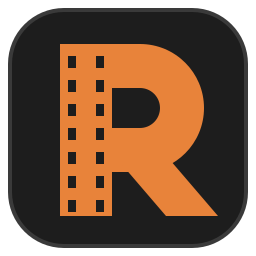

El editor que sigue tu ritmo.
Rodaje es un editor de video nativo para Windows: rápido, por capas y preciso. Funciona sin una suscripción y mantiene el trabajo y las herramientas de IA local en tu equipo.

Hecho para editar, no para esperar
- Edición por capasCorta, ajusta, anima y organiza con precisión de cuadro.
- Imagen y sonidoColor, títulos, subtítulos, audio y exportación en un mismo flujo.
- Crece contigoInstala complementos y módulos desde un catálogo firmado.
Elige cómo usarlo
La página de Releases ofrece instalador para tu usuario y una edición portable. Los complementos y módulos disponibles se publican en el catálogo de Rodaje.